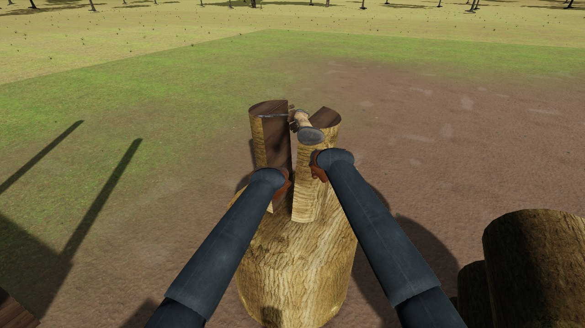
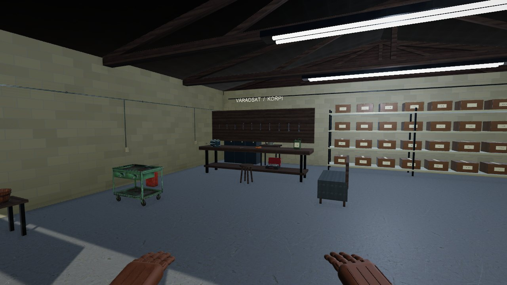
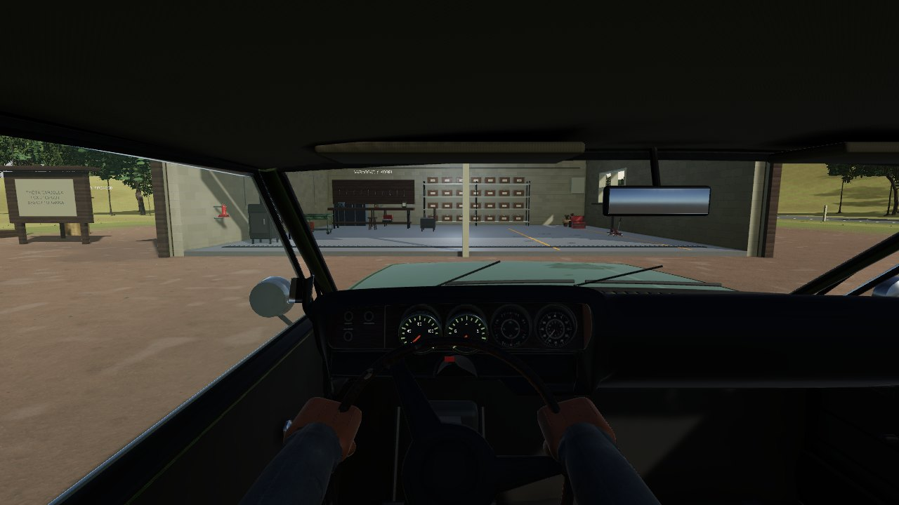
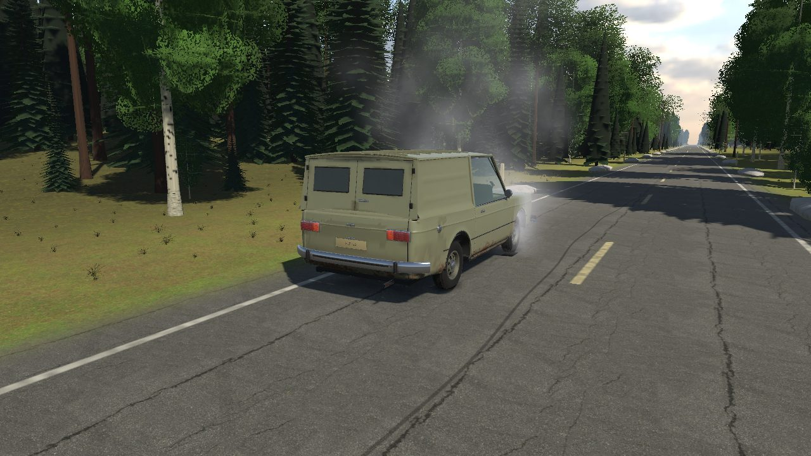
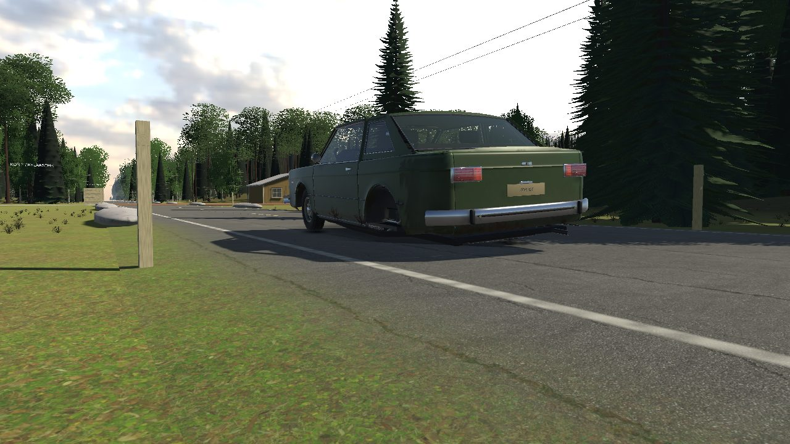

SUOMALAINEN AUTOTALLISIMULAATTORI
FINNISH
GARAGE
SIMULATOR.
Vanha auto. Oma talli.
Ja aina jotain laitettavaa.
Finnish Garage Simulator on kehityksessä oleva suomalainen autotalli- ja autokorjaamopeli Windowsille. Korjaa, ansaitse ja lähde tien päälle — omaan tahtiisi.
Windows PC · Kehityksessä · Betatestaajia haetaan

OMASSA TALLISSA.
01 / PELIN IDEA
OMASSA TALLISSA
EI TULE VALMISTA.
Seuraava korjaus. Ensimmäinen koeajo. Vielä yksi mutka ennen kotiinlähtöä.
Finnish Garage Simulatorin ytimessä on auton laittaminen itse. Projektiauto hankitaan, vikaa tutkitaan ja osat vaihdetaan omin käsin. Työt tuovat pelin sisäisiä krediittejä seuraavaan varaosaan.
Tavoitteena on avoin suomalainen maaseutu, jossa voit seurata pääjuonta tai puuhailla omien projektiesi parissa. Kesä, talvi ja soratiet tuovat omat haasteensa.
Millaista peliä rakennamme? ↗02 / TALLISTA TIEN PÄÄLLE
TYÖTÄ, JOKA
TUNTUU OMALTA.
Näitä kokonaisuuksia kehitämme ja testaamme. Sisältö ja toteutukset voivat vielä muuttua.
- 01
Korjaa omin käsin
Osat irti, oikea varaosa paikalleen ja pultit kiinni. Kunnolla on merkitystä.
- 02
Ansaitse seuraava projekti
Asiakastöitä, varaosahankintoja ja fyysisiä puutöitä. Pelin talous käyttää fiktiivisiä CR-krediittejä.
- 03
Lähde kokeilemaan
Ajomallia kehitetään osien kunnon, rengasvalintojen ja vaihtelevan pidon ympärille.

03 / KUVIA MATKAN VARRELTA
PIENI KURKISTUS
PELLIN ALLE.
Uusimmat kuvat on otettu kehitysversiosta 7.11.2026: ojat, luiskat ja kukkivat tienvarret oikean Keski-Suomen maastossa. Kirkonkylän ja Järvikylän kuvat ovat 3.11.2026, ja havumetsän, renkaanpolton ja vanteella ajossa irronneen pyörän kuvat 1.11.2026. Tallin, konehuoneen, talven, projektiauton ja ohjaamon kuvat ovat aiemmista versioista. Grafiikka, materiaalit ja animaatiot ovat keskeneräisiä. Julkista demoa ei vielä ole.











04 / MISSÄ MENNÄÄN
VIELÄ TALLISSA.
EI LÄHTÖVIIVALLA.
Pelistä rakennetaan toimivaa kokonaisuutta pala kerrallaan. Tällä sivulla kerromme projektin suunnasta ja kehityksen etenemisestä. Uusimmassa kehitysversiossa maasto on oikeaa Keski-Suomea Maanmittauslaitoksen avoimista aineistoista (CC BY 4.0): mäkiä, notkoja, kymmenen järveä, peltoja ja soita. Maailma ei vastaa mitään todellista paikkaa. Tiet nousevat ja laskevat maaston mukana, ja niillä on ojat, pientareet ja luiskat. Tienvarsilla kasvaa lupiinia ja maitohorsmaa, ja maanteiden varressa kulkevat puiset sähköpylväät. Ojaan ajaminen on oikea vaara: hiljaa valuva auto pääsee varovasti takaisin tielle, mutta lujaa ajava kolhiintuu ja voi lentää ojan yli metsään. Maaseutua on noin 4,8 × 4,8 kilometriä ja teitä noin 21 kilometriä: kirkonkylä, Järvikylä, saha, soramonttu ja Korpisuo. Uusilla alueilla ei vielä ole tehtäviä eikä kauppoja. Facebook-seuraajien ideoista peliin tulivat moottorin vikavalo vilkkukoodeineen, routakuopat, jumiutuvat ruosteiset pultit, puskakauppa ja osittain kotipolttoisella maksavat asiakkaat. Tallin takahyllyssä on Eskon omia ilmaisia varaosia, ja peli käynnistyy kokoruututilassa. Autot ja konehuone on mallinnettu aiemmin uudelleen. Aiempi kuvakatsaus esittelee 0.20-version grafiikkatyötä: maastoa, vuodenaikoja, tallia ja työkaluja.
Kysy kehityksestä ↗Peli on kehityksessä.
Betatestaajia haetaan.
Julkista demoa, avointa testiversiota tai pelin latausta ei ole tällä hetkellä saatavilla. Haemme nyt testaajia suljettuun betatestiin. Lähetä sähköpostia osoitteeseen nordhashoy@gmail.com otsikolla Betatesti. Betan vähimmäisvaatimukset: Windows 10 tai 11 (64-bit), Intel Core i5-6400 tai vastaava neliytiminen prosessori, 8 Gt muistia, Radeon RX 580 4 Gt tai vastaava DirectX 11 -näytönohjain ja 1 Gt vapaata levytilaa. Peli ja ohjeet ovat suomeksi. Ilmoittautuminen ei vielä takaa testipaikkaa.
- Työn alla
- Pelimekaniikat, ajotuntuma, grafiikka ja maailman sisältö
- Suunniteltu julkaisusuunta
- Windows PC · Steam Early Access
- Julkaisupäivä ja hinta
- Ei vielä vahvistettu
Early Access on tavoite. Julkaisuajankohtaa tai Steam-kauppasivua ei ole vahvistettu.
05 / HYVÄ TIETÄÄ
MUUTAMA
SUORA VASTAUS.
Voiko peliä tai demoa jo ladata?
Ei. Peli on kehityksessä, eikä julkista demoa tai avointa testiversiota ole vielä saatavilla. Mahdollisesta demosta kerrotaan tällä sivulla, kun se on ajankohtainen. Suljettuun betatestiin haetaan kuitenkin nyt testaajia: kerro kiinnostuksestasi sähköpostilla otsikolla Betatesti. Ilmoittautuminen ei takaa testipaikkaa.
Mille alustalle peliä kehitetään?
Ensisijainen alusta on Windows PC. Muita alustoja ei ole vahvistettu. Betan vähimmäisvaatimukset: Windows 10 tai 11 (64-bit), Intel Core i5-6400 tai vastaava neliytiminen prosessori, 8 Gt muistia, Radeon RX 580 4 Gt tai vastaava DirectX 11 -näytönohjain ja 1 Gt vapaata levytilaa. Valmiin pelin vaatimukset vahvistetaan myöhemmin.
Onko tämä avoimen maailman peli?
Kehityksen tavoitteena on avoin suomalainen maaseutu ja seurattava pääjuoni. Nykyisessä kehitysversiossa maaseutua on noin 4,8 × 4,8 kilometriä, ja maasto on oikeaa Keski-Suomea. Lopullinen laajuus, sisältö ja tehtävät ovat vielä työn alla.
Milloin peli julkaistaan Steamissa?
Suunnittelemme Windowsille Early Access -julkaisua. Julkaisupäivää, hintaa tai Steam-kauppasivua ei ole vielä vahvistettu.
Näyttääkö valmis peli kehityskuvien kaltaiselta?
Kehityskuvat näyttävät prototyypin todellisen tilanteen kuvaushetkellä. Tilapäisiä malleja, grafiikkaa ja animaatioita on tarkoitus kehittää eteenpäin. Lopullista ulkoasua ei vielä luvata.
Toimiiko peli ratilla tai peliohjaimella?
Hiiri ja näppäimistö ovat nykyisen kehitysversion ohjaustapa. Ratti-, poljin- ja peliohjaintuki ovat vahvistamatta. Lisää alustasta ja ohjauksesta →
06 / PIDETÄÄN YHTEYTTÄ
TERVEISIÄ
TALLILLE?
Palautetta, kysymyksiä tai ajatuksia pelin suunnasta? Kehittäjään saa yhteyden sähköpostilla.
Ota yhteyttä